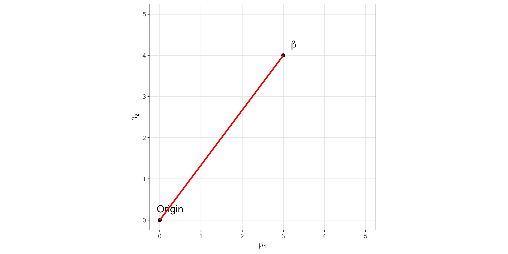
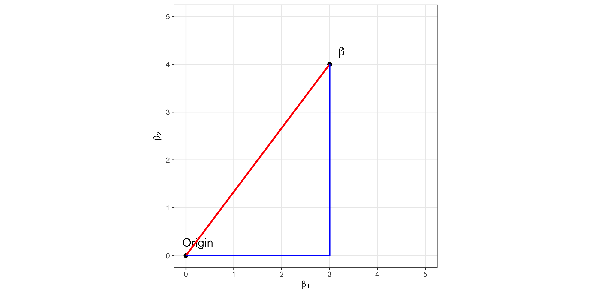
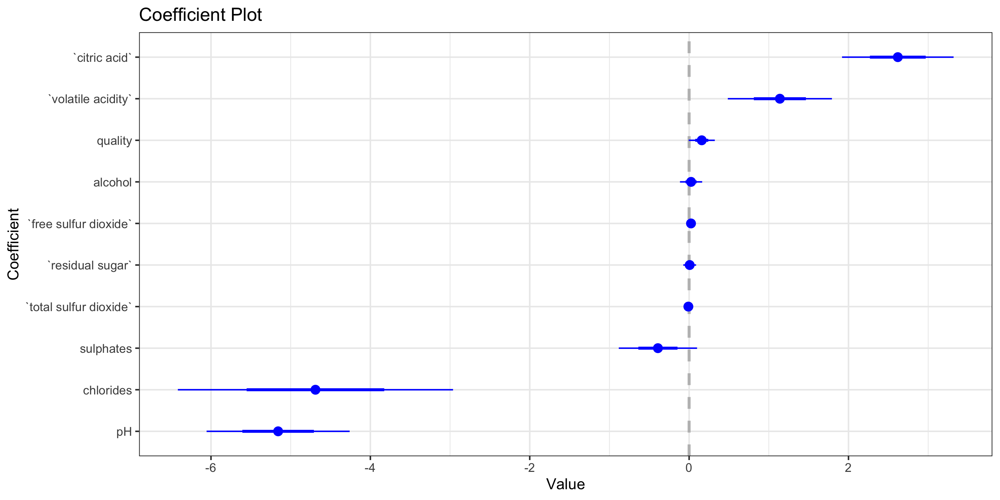
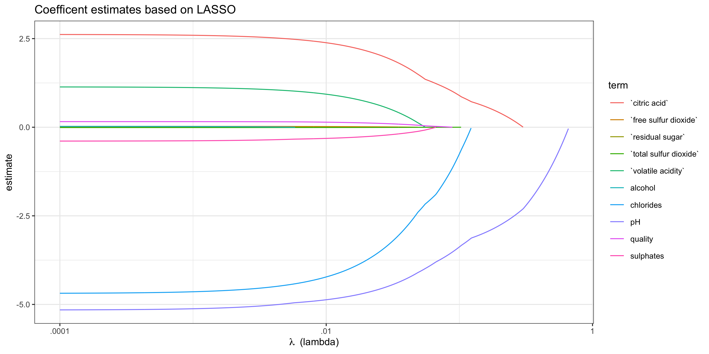
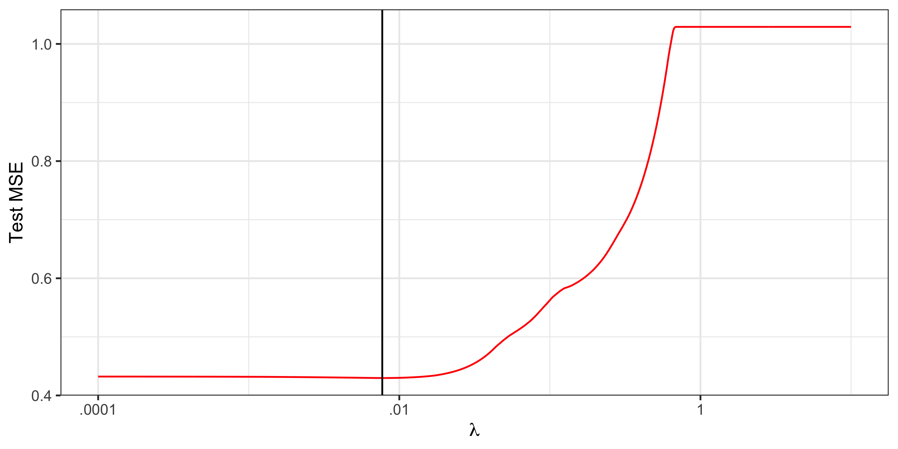
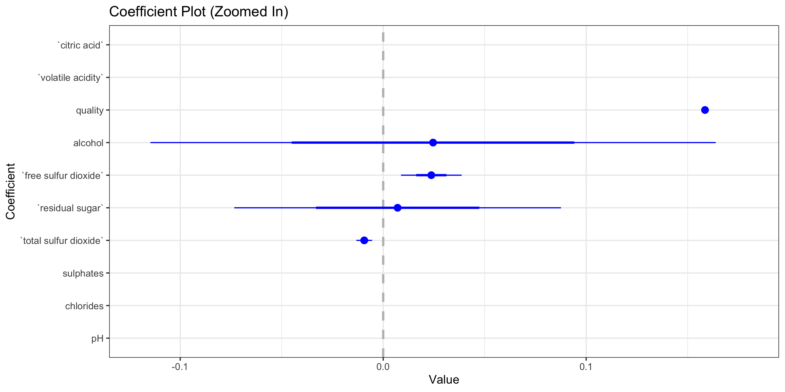

Penalized Regression: LASSO
Grayson White
Stat 243
Week 6 | Fall 2026
Goals for this week
Monday:
Introduce penalization to improve MSE in regression models
Define and apply Ridge Regression in a case study
Today:
Introduce LASSO as a penalization and variable selection method
Apply LASSO in a case study
The LASSO
Recall: Least Squares and Ridge Regression
Suppose we’ve selected a regression model: \[Y = \beta_0 + \beta_1X_1 + \dots + \beta_pX_p + \epsilon,\qquad \epsilon \sim N(0,~\sigma^2)\]
Least Squares: Find \(\beta\)s that minimize \[RSS=\sum_{i=1}^n\Big(Y_i - \hat{Y}_i\ \Big)^2\]
- Goal of RSS: Make regression line “close to data”
Ridge Regression: Find \(\beta\)s that minimize \[ \textrm{RSS} + \underbrace{\lambda\sum_{j = 1}^p \beta_j^2}_\text{Ridge Penalty} \qquad \textrm{where } \lambda \geq 0 \]
- Goal of Ridge Penalty: Make coefficients smaller
LASSO Regression
\[\begin{aligned} \text{Least Squares: }& \text{Minimize RSS}\\ \text{Ridge Regression: }& \text{Minimize RSS} + \lambda \sum_{j=1}^p \beta_j^2 \end{aligned}\]
Least Absolute Shrinkage and Selection Operator: Find \(\beta\)s that minimize \[ \textrm{RSS} + \underbrace{\lambda\sum_{j = 1}^p \big|\beta_j\big|}_\text{LASSO Penalty} \qquad \textrm{where } \lambda \geq 0 \]
Goal of LASSO Penalty: Make coefficients smaller
Like Ridge, LASSO increases bias but decreases variance and (hopefully) MSE.
So how is LASSO different from Ridge?
Geometric Perspective: Two Types of Distance
How to measure distance between a point \(x=(x_1, \dots, x_p)\) and the origin \((0, \dots, 0)\)?
Euclidean distance: “straight line” distance: \[ \Vert x\Vert_2 = \sqrt{x_1^2 + \dots + x_p^2} = \sqrt{ \sum_{j=1}^p x_j^2} \]
Most common: Result of the Pythagorean theorem
Also called the \(\ell_2\) norm
Ridge uses \(\big(\Vert x\Vert_2\big)^2\) to “shrink” coefficients
Manhattan distance: “grid line” distance: \[ \Vert x\Vert_1 = |x_1| + \dots + |x_p| = \sum_{j=1}^p |x_j| \]
the \(\ell_1\) norm
LASSO uses \(\Vert x\Vert_1\) directly for shrinkage
Geometric Perspective
Geometric Perspective

- \(\Vert \beta \Vert_2 = \sqrt{3^2 + 4^2} = 5\)
Geometric Perspective

\(\Vert \beta \Vert_2 = \sqrt{3^2 + 4^2} = 5\)
\(\Vert \beta \Vert_1 = 3 + 4 = 7\)
- Takeaway: Ridge and LASSO measure “distance” differently
Consider: Different Distance, Different Emphasis
\[\begin{aligned} \text{Least Squares: }& \text{Minimize RSS}\\ \text{Ridge Regression: }& \text{Minimize RSS} + \lambda \sum_{j=1}^p \beta_j^2\\ \text{LASSO Regression: }& \text{Minimize RSS} + \lambda \sum_{j=1}^p \big|\beta_j\big| \end{aligned}\]
Suppose \(\beta_j=\ -10\). Calculate \(\beta_j^2\) and \(\big|\beta_j\big|\), then explain why this shows that Ridge penalizes “big” coefficients more than LASSO.
Suppose \(\beta_j=\ 0.1\). Calculate \(\beta_j^2\) and \(\big|\beta_j\big|\), then explain why this shows that LASSO penalizes “small” coefficients more than Ridge.
Hypothesize why LASSO might shrink coefficients to exactly zero more often than Ridge.
LASSO for Variable Selection
We’ve just uncovered why LASSO is a variable “selection operator”:
Ridge and LASSO: Coefficients with high variance are encouraged to shrink.
Ridge: Penalty gets relatively smaller as coefficients get smaller
- No benefit of making small coefficients zero.
LASSO: Penalty gets relatively larger as coefficients get smaller
Bigger benefit of making small coefficients precisely 0.
\(\beta_j=0\) \(\implies\) \(X_j\) removed from model!
This is variable selection!
Ridge vs. LASSO
Similarities:
Fast to estimate models (similar to Least Squares)
Shrink coefficients: Increasing bias but reducing variance and MSE
Differences:
LASSO performs variable selection simultaneously, Ridge does not.
LASSO generally outperforms Ridge when some coefficients are truly zero.
Ridge generally outperforms LASSO when all coefficients are truly non-zero.
Case Study: Wine Acidity
Wine Acidity
We study a “classic” dataset on red Vinho Verde wines grown in Northern Portugal.
\(n=200\) different wines
\(Y\)=Fixed Acidity
\(X\)=9 physical properties of the wine (e.g., residual sugar, pH, etc.) and average quality rating
# A tibble: 6 × 11
`fixed acidity` `volatile acidity` `citric acid` `residual sugar` chlorides
<dbl> <dbl> <dbl> <dbl> <dbl>
1 7.4 0.7 0 1.9 0.076
2 7.8 0.88 0 2.6 0.098
3 7.8 0.76 0.04 2.3 0.092
4 11.2 0.28 0.56 1.9 0.075
5 7.4 0.7 0 1.9 0.076
6 7.4 0.66 0 1.8 0.075
# ℹ 6 more variables: `free sulfur dioxide` <dbl>,
# `total sulfur dioxide` <dbl>, pH <dbl>, sulphates <dbl>, alcohol <dbl>,
# quality <dbl>Wine Acidity: Response variable distribution
Least Squares Estimates

Q: Which coefficients will LASSO shrink to 0?
LASSO in R
LASSO Estimates (ggplot2)
Examine how LASSO coefficient estimates vary as \(\lambda\) changes:
tidied <- tidy(lasso_mod) %>% filter(term != "(Intercept)")
ggplot(tidied, aes(x = lambda, y = estimate, group = term, color = term)) +
geom_line() +
scale_x_log10(breaks = c(10^c(-4, -2, 0)),
labels = c(".0001", ".01", "1")) +
theme_bw(base_size = 10) +
labs(title = "Coefficent estimates based on LASSO",
x = expression(lambda ~ " (lambda)")) +
guides(color = guide_legend(ncol = 1))
LASSO Estimates (base)
Cross-Validation for Optimal Tuning Parameter
To find the optimal tuning parameter, \(\lambda\), we again use Cross-Validation
set.seed(1010)
my_cv <- cv.glmnet(x,
y,
alpha = 1,
lambda = grid,
nfolds = 20)
best_L <- my_cv$lambda.min
reg_L <- my_cv$lambda.1se
tidied <- tidy(my_cv)
ggplot(tidied, aes(x = lambda, y = estimate)) +
geom_line(color = "red") +
scale_x_log10(breaks = c(10^c(-4, -2, 0)),
labels = c(".0001", ".01", "1")) +
theme_bw(base_size = 15) +
labs(x = expression(lambda), y = "Test MSE") +
geom_vline(xintercept = best_L)
Gray vertical line is optimal \(\lambda\): Test MSE minimized at 0.4297.
(Ridge yields Test MSE of 0.4317)
Feature Selection
What features did the best \(\lambda\) select?
[1] "(Intercept)" "`volatile acidity`" "`citric acid`"
[4] "`residual sugar`" "chlorides" "`free sulfur dioxide`"
[7] "`total sulfur dioxide`" "pH" "sulphates"
[10] "quality" Back to the Least Squares Estimates

Back to the Least Squares Estimates

LASSO removed only a high variance coefficient that was near 0.
Recap
Today, we learned about…
LASSO as a penalization and variable selection method
Similarities and differences with Ridge
Next time
- Quiz
- Start the next lab!